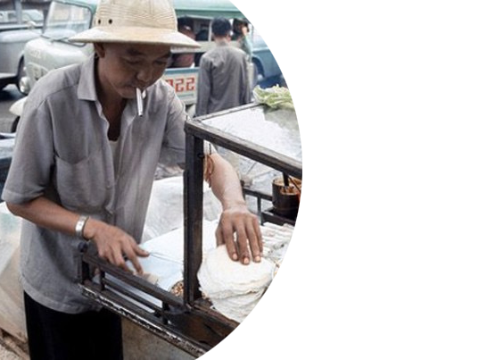

Món ngon Sài Gòn
FOOD CULTURE
"Không chỉ trong thời kì hiện đại mà ẩm thực Sài Gòn xưa cũng được đón nhận nhiều dòng chảy văn hóa khác nhau, trong đó ẩm thực đường phố là đặc sắc nhất."
Bây giờ ở VN ăn gì cũng chết, nhất là trái cây và hải sản. Không còn các món ngon của Saigon xưa. Từ những quán ăn được trang trí và bày biện rất đơn giản và có phần tạm bợ trên dọc đường đi, trong các khu chợ đến các quán hàng sang trọng hay những chiếc xe đẩy bán nước thô sơ đến những quán cà phê ngay khu trung tâm thành phố đều là những địa điểm yêu thích của người dân Sài Gòn ngày xưa.
Thời đại mà giới trẻ chỉ có thể thấy qua những thước phim trắng đen mờ nhạt. Thời đại "Cô Ba Sài Gòn" dường như luôn có điểm gì đó rất thú vị. Và có một sự thật là sự thú vị đó cũng do khác biệt quá lớn giữa tư duy cũng như cung cách sống giữa hai thế hệ, giới trẻ sẽ thường luôn cảm thấy thích thú với những gì xưa cũ, khác lạ và "vintage" một tí, từ cách ăn mặc, đi đứng đến cách ăn uống.
Ẩm thực đường phố Sài Gòn thế kỷ 20 nhộn nhịp với những món ăn đặc trưng của người dân nơi này, những món ăn trong những bức ảnh dưới đây chắc hẳn cho đến bây giờ vẫn rất thân thuộc với người Sài Gòn hiện đại. Sự nhộn nhịp, giản dị của những gánh hàng rong cùng thấp thoáng những chiếc áo dài đài các tạo nên nét văn hóa riêng của thành phố Sài Gòn những năm của thế kỷ 20.
Vào những năm trước 1975, người Pháp đặt tên cho Sài Gòn bằng cái tên lãng mạn là “Hòn ngọc Viễn Đông”, nghe thì trìu mến thân thương là thế nhưng đánh đổi giữa cái danh xưng ngọt ngây ấy là cảnh khốn cùng của người Việt Nam khi phải chịu sự bóc lột đến tủi nhục để duy trì sự xa xỉ đó cho người Pháp.


Vừa nghe nhắc đến Sài Gòn, người ta dễ nhớ đến những địa danh nổi tiếng gắn liền với mảnh đất xinh đẹp này như Chợ Bến Thành, Dinh Độc Lập, nhà hát Thành Phố hay con đường Nhà Thờ Đức Bà bất kể ngày đêm vẫn tấp nập người. Trên bất kỳ con phố nào bạn cũng có thể bắt gặp những hàng quán bên vỉa hè với vô vàn những món ăn ngon khiến bạn mê mệt. Nào là ốc, hủ tíu, bánh tráng trộn, cơm tấm, gỏi cuốn, bánh tráng nướng,… những món ăn tuy bình dị nhưng đã gắn bó với người Sài Gòn từ rất lâu.
Việt Nam là quốc gia có 54 dân tộc anh em và chia làm 3 miền Bắc – Trung – Nam. Ở mỗi vùng miền, mỗi dân tộc đều có những món ăn đặc trưng mang hương vị khác nhau. Khi xưa, người Việt có thói quen ăn nhạt, không đậm đà như ẩm thực phương Tây, nhất là người miền Trung. Hơn nữa, người Việt Nam với mỗi món ăn từ xưa đều có sự kết hợp giữa nhiều vị, có rất nhiều món có đầy đủ các vị chua, cay, mặn, ngọt… Hơn nữa, ẩm thực Việt Nam luôn có tính cộng đồng, từ những bữa ăn gia đình cả xưa và nay đều chỉ dùng riêng chén cơm, còn lại, các món ăn, nước chấm đều được dùng chung và trình bày chung 1 đĩa. Một trong những đặc điểm mà ẩm thực Việt Nam khiến các du khách yêu thích chính là sự hiếu khách, khi du khách được mời và thưởng thức mâm cơm cùng với gia đình người Việt. Nói đến ẩm thực Sài Gòn thì không thể không nhắc đến ẩm thực Sài Gòn xưa và nhất là thời điểm trước năm 1975. Vốn được mệnh danh là "Hòn ngọc Viễn Đông", ẩm thực nơi đây là sự giao thoa, chắt lọc, tiếp thu của nhiều nền văn hóa từ Đông sang Tây, để rồi tích tụ thành một nét đặc trưng rất riêng của mình. Nhìn vào nét văn hóa ẩm thực đường phố Sài Gòn gia đoạn này, chúng ta như được thấy lại một phần cuộc sống rất thú vị của Sài Gòn năm xưa cũng rất ồn ào, náo nhiệt. Dù đã hơn 40 năm trôi qua, nhưng chắc hẳn trong kí ức của nhiều người Sài Gòn về những gánh hàng rong, về tiệm phá lấu, hủ tíu dạo, hay gánh mía ghim của tuổi thơ vẫn còn rất sâu đậm. Qua những khung ảnh, chúng ta có thể cảm nhận được nét văn hóa ẩm thực Sài Gòn xưa đấy thú vị và cũng vô cùng đặc sắc. Tất cả đã tạo nên một bản sắc thú vị của ẩm thực Sài Gòn mà không nơi nào có được. Trong suốt quá trình hình thành và phát triển của mình, Sài Gòn đón nhận nhiều dòng chảy văn hóa khác nhau, và cũng là nơi tụ hội nhiều tinh hoa ẩm thực nhất